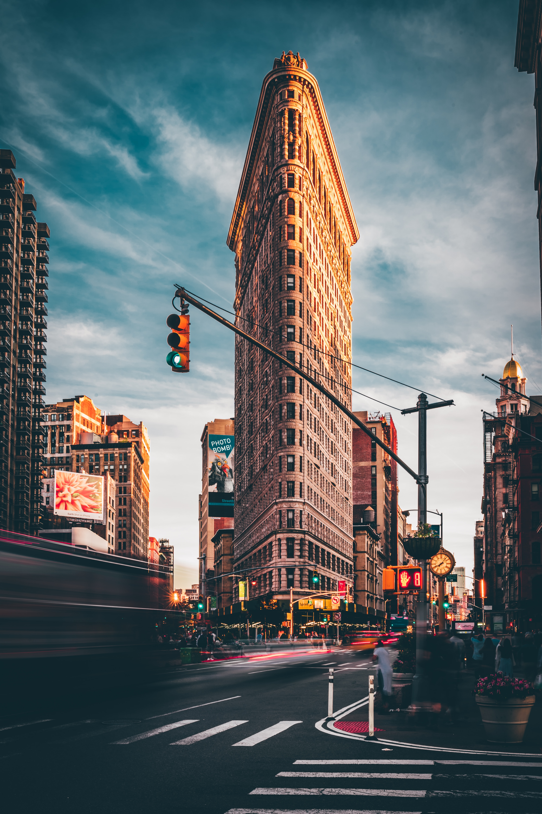

Travel
Yellowstone National Park
Geographic Location
North America
Photo Gallery

Mammoth Hot Springs has a number of actively forming Travertine terraces.

The drive to Lamar Valley requires some dangerous roads. But the result is amazing sunset views.
The multicolored layers get their hues from different species of bacteria living in the cooler water around the spring
The buffalo were so common along the roads in Yellowstone that our mantra became "If it ain't lickin the car, we aren't stopping

If you can handle the odor, the Yellowstone Sulphur Springs is a great place to hike.
Los Angeles


Geographic Location
North America
Introduction
Los Angeles is a sprawling Southern California city and the center of the nation’s film and television industry. Near its iconic Hollywood sign, studios such as Paramount Pictures, Universal and Warner Brothers offer behind-the-scenes tours. On Hollywood Boulevard, TCL Chinese Theatre displays celebrities’ hand- and footprints, the Walk of Fame honors thousands of luminaries and vendors sell maps to stars’ homes.
Los Angeles is famous for its idyllic, warm climate. Temperatures are high but pleasant all year round while rainfall is uncommon and mainly limited to the winter months.
Photo Gallery


Seattle


Geographic Location
North America
Introduction
Seattle, nestled in the Pacific Northwest, harmoniously blends city living with nature's beauty. The iconic Space Needle stands tall, offering sweeping views of mountains and water. Seattle's cultural scene thrives with museums, theaters, and a rich music history, while its commitment to sustainability and outdoor activities makes it a haven for nature lovers.
Seattle, birthplace of Starbucks, is a coffee lover's paradise. Distinct neighborhoods like Pioneer Square and Capitol Hill offer diverse experiences, and Pike Place Market bustles with fresh seafood and artisanal goods. Seattle's fusion of innovation, natural allure, and cultural richness makes it a compelling and inviting city.
Photo Gallery

The Space Needle is an iconic Seattle landmark, soaring above the city with its futuristic design and offering stunning panoramic views of the surrounding landscape.

Pike Place Market is a bustling and historic marketplace in Seattle, renowned for its vibrant atmosphere, fresh seafood, and artisanal goods.

Mount Rainier is a majestic stratovolcano towering over the Pacific Northwest, known for its year-round snow-capped peak and breathtaking alpine landscapes.
Boston


Geographic Location
North America
Introduction
Boston, Massachusetts, is a city where American history comes to life. With its storied past, including the Boston Tea Party and the Battle of Bunker Hill, the city preserves its heritage through historic landmarks and the Freedom Trail. Beyond history, Boston is a vibrant cultural and academic center, home to renowned universities like Harvard and MIT, as well as world-class museums, theaters, and a thriving sports scene.
Boston's neighborhoods offer a diverse range of experiences, from the cobblestone streets of Beacon Hill to the trendy shops and restaurants of the South End. The city's green spaces, such as the Boston Common and the Emerald Necklace parks, provide a peaceful escape from the urban hustle, while the bustling waterfront and delicious seafood cuisine showcase its maritime roots. Boston's unique blend of history, culture, and local charm makes it a captivating destination for visitors and a beloved home for its residents
Photo Gallery

Harvard University is an iconic Ivy League institution in Cambridge, Massachusetts, renowned for its academic excellence and historic prestige.

The Charles River is a picturesque waterway winding through the Boston metropolitan area, offering scenic views and recreational opportunities for residents and visitors alike.

Boston Common is a historic and beloved urban park located in the heart of Boston, serving as a tranquil oasis amid the city's hustle and a gathering place for both residents and tourists.
New York


Geographic Location
North America
Introduction
New York City, often dubbed the "City that Never Sleeps," is a bustling metropolis like no other. Its iconic skyline, dominated by towering skyscrapers like the Empire State Building and One World Trade Center, symbolizes its ceaseless ambition and innovation. The city's cultural diversity is a defining feature, with neighborhoods like Chinatown, Little Italy, and Harlem offering a rich tapestry of traditions and flavors. From the bright lights of Times Square to the tranquility of Central Park, New York City offers a striking blend of urban excitement and natural beauty. It's a place where world-class museums, theaters, and restaurants cater to a global audience, making it a beacon for culture and creativity.
Beyond the surface, New York City's subway system and iconic yellow taxis make it remarkably accessible, allowing residents and visitors alike to explore its diverse offerings. This city is a stage for dreams to be pursued, a canvas for artistry to flourish, and a relentless engine of progress. It's a place where the past meets the future, and where every corner seems to tell a unique story, making New York City an irresistible destination for those seeking inspiration and adventure.
Photo Gallery

The Brooklyn Bridge is an iconic suspension bridge spanning the East River, connecting Manhattan and Brooklyn, known for its majestic architecture and historical significance.
The Flatiron Building, with its distinctive triangular shape and Beaux-Arts architecture, is a historic landmark nestled in the heart of Manhattan, epitomizing New York City's architectural charm.

Central Park is a sprawling urban oasis in the heart of Manhattan, offering a serene escape from the city's hustle and bustle with its lush greenery, scenic waterways, and diverse recreational opportunities.